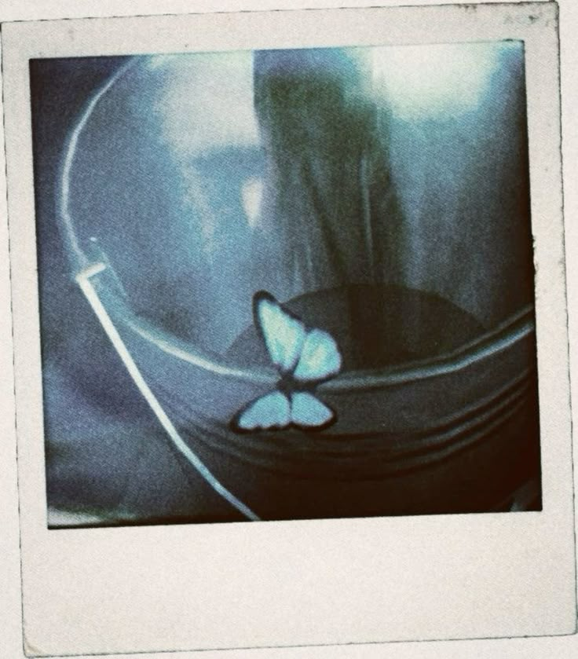
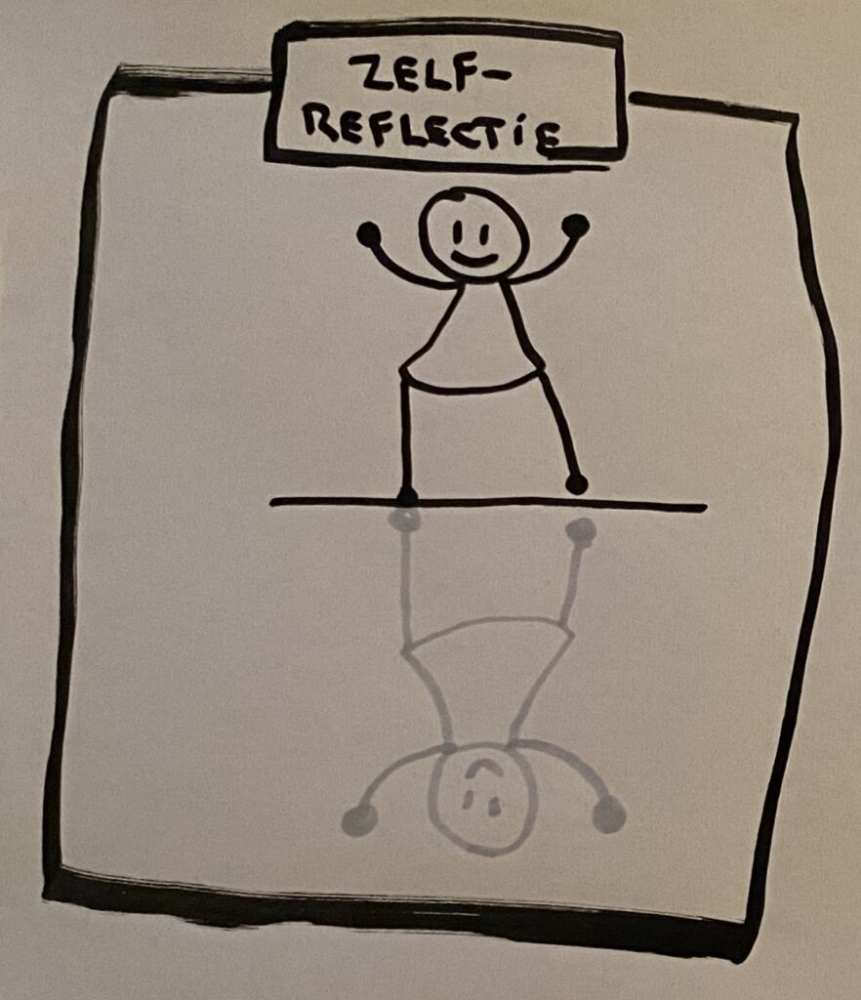

Planning / Logboek

Ontwikkeling
Opdrachten

Reflectie
Hallo, welkom bij mijn portfolio! Mijn naam is Jarne Peeters en ik ben een student aan PXL Hasselt voor de opleiding Programmeren.
Ik ben geïnteresseerd in websites maken en verschillende andere onderdelen van programmeren.
Ook doe ik aan voetbal en zaalvoetbal en in mijn vrij tijd speel ik games zoals Life is Strange — de inspiratie voor deze portfolio.
Verder zullen jullie hier meer informatie vinden over mijn werk op school. Veel leesplezier!
Semester 1 · Individuele opdrachten, evaluaties & persoonlijke groei


Semester 2 · Groepsproject, case Qern & eindreflectie